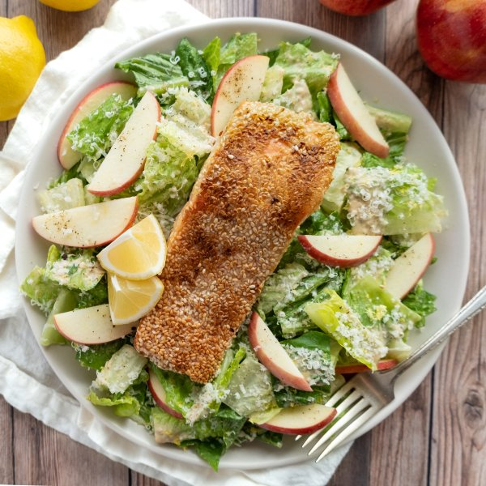

Sesame Encrusted Salmon over Tahini-Parmesan Caesar Salad with Apple

Nutrition (per serving)
657.7 kcalCalories
52.9 gProtein
32.4 gCarbs
37.4 gFat
Full nutrition table
| Calories | 657.7 kcal |
| Total fat | 37.4 g |
| Saturated fat | 8 g |
| Trans fat | 0.1 g |
| Cholesterol | 128.8 mg |
| Sodium | 216.7 mg |
| Carbohydrates | 32.4 g |
| Fiber | 11.7 g |
| Sugars | 14.1 g |
| Protein | 52.9 g |
| Potassium | 1768.8 mg |
| Calcium | 261.6 mg |
| Iron | 6.7 mg |
| Vitamin A | 542.9 IU |
| Vitamin C | 28.5 mg |
| Vitamin D | 627.1 IU |
Cookware
Ingredients
- 2anchovy fillets, packed in oil
- 1egg
- 2Gala apples
- 2 clovesgarlic
- 2lemons
- 2 ozParmesan cheese
- 2 headsromaine lettuce
- 1 ½ lbsalmon fillet
- black pepper
- cornstarch
- Dijon mustard
- salt
- sesame seeds
- tahini
- toasted sesame oil
Steps
- Wash and dry the fresh produce.2 lemons
2 heads romaine lettuce
2 Gala apples - Zest the lemons into a large salad bowl. Juice 1 lemon into the same bowl. Cut remaining lemon into wedges and set aside.
- Add water, tahini, Dijon, oil, salt, and pepper to the bowl with lemon juice and zest; whisk until the dressing becomes smooth and glossy.¼ cup water
¼ cup tahini
4 tsp Dijon mustard
4 tsp toasted sesame oil
½ tsp salt
½ tsp black pepper - Peel and finely mince garlic. Finely mince anchovy fillets; transfer both to the salad bowl.2 cloves garlic
2 anchovy fillets, packed in oil - Finely grate half of the Parmesan and add to the salad bowl (set the rest aside for garnish). Stir to combine and set aside.2 oz Parmesan cheese
- Pat the salmon fillets dry with paper towels and place on a plate; season with salt and pepper.1 ½ lb salmon fillet
½ tsp salt
½ tsp black pepper - Combine the egg and cornstarch into a medium bowl; beat with a whisk or fork until smooth and frothy.1 egg
1 tbsp cornstarch - Dip the skinless side of the salmon into the egg mixture and place back on the plate, skin-side down. Sprinkle sesame seeds over the surface of the fish, pressing down gently with your fingers to adhere.¼ cup sesame seeds
- Preheat a large nonstick skillet over medium heat.
- Once the skillet is hot, add oil and swirl to coat the bottom.2 tsp toasted sesame oil
- Add salmon to the skillet, sesame-seed side down, and cook until crust is firm and seeds are golden brown, about 3 minutes. Flip and cook until salmon is cooked through and skin is crispy, 5-7 minutes longer. Remove skillet from the heat.
- Meanwhile, chop or tear the romaine into bite-sized pieces and transfer to the bowl with the dressing.
- Wash, core, and thinly slice the apples; add to the bowl and toss to combine the salad.
- To serve, divide salad and salmon between bowls or plates. Grate reserved Parmesan over top and garnish with lemon wedges. Enjoy!